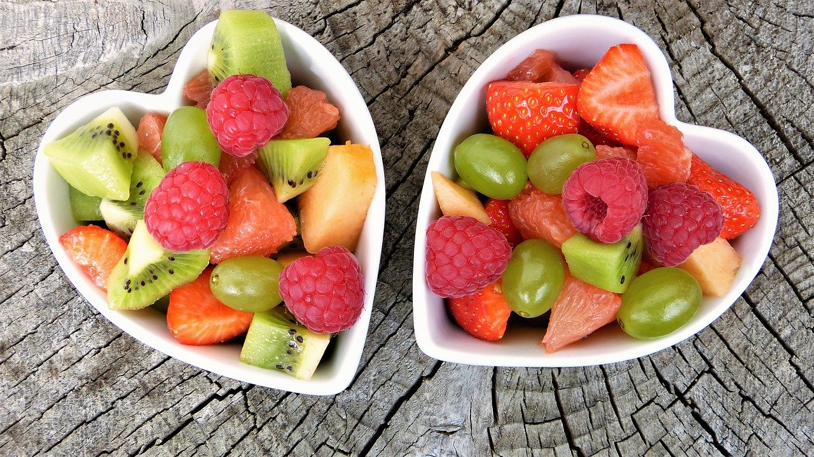

BENEFITS
Fruits are sources of many essential nutrients that are underconsumed, including potassium, dietary fiber, vitamin C, and folate (folic acid).

Dietary fiber from fruits, as part of an overall healthy diet, helps reduce blood cholesterol levels and may lower risk of heart disease. It helps reduce constipation and diverticulosis.
Diets rich in potassium may help to maintain healthy blood pressure. Fruit sources of potassium include bananas, prunes and prune juice, dried peaches and apricots, cantaloupe, honeydew melon, and orange juice.

Folate (folic acid) helps the body form red blood cells. This reduces the risk of neural tube defects, spina bifida, and anencephaly during fetal development.